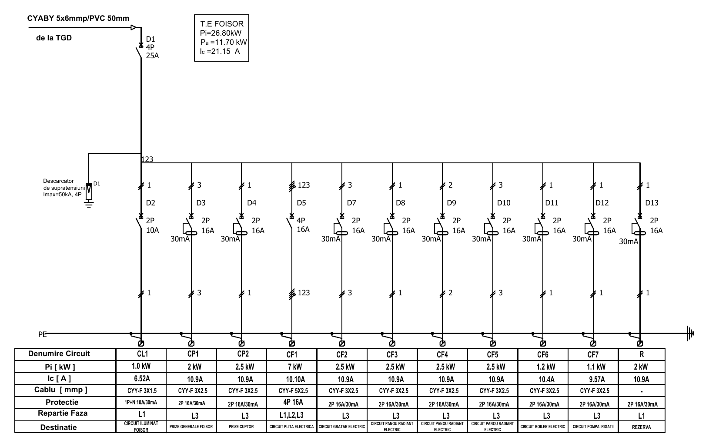
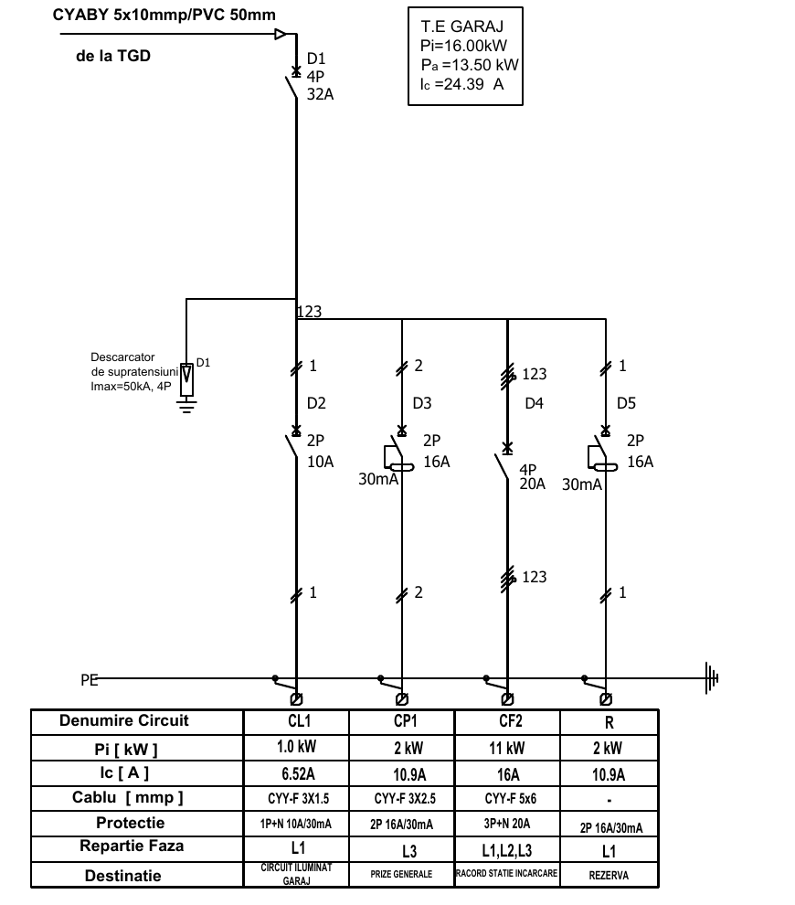

Primiți schema monofilară a unui tablou electric secundar dintr-un proiect real de execuție (varianta A — T.E. FOIȘOR, varianta B — T.E. GARAJ). Trebuie să identificați aparatele, să verificați alegerea lor după I7-2011 (inclusiv ce lipsește sau e neclar în proiect), să alegeți aparate reale din catalog, să verificați cofretul, să întocmiți fișa tehnologică de echipare și să desenați tabloul echipat.
De studiat înainte: MCB, MCCB, DDR și RCBO · Tipurile de DDR și AFDD · Capacitatea de rupere (tabelul de aparate cu fișe tehnice, §10).

| Circuit | Destinație | Pi [kW] | Ic [A] | Cablu | Protecție (din proiect) | Faza |
|---|---|---|---|---|---|---|
| CL1 | Circuit iluminat foișor | 1,0 | 6,52 | CYY-F 3×1,5 | 1P+N 10 A / 30 mA | L1 |
| CP1 | Prize generale foișor | 2 | 10,9 | CYY-F 3×2,5 | 2P 16 A / 30 mA | L3 |
| CP2 | Prize cuptor | 2,5 | 10,9 | CYY-F 3×2,5 | 2P 16 A / 30 mA | L3 |
| CF1 | Circuit plită electrică | 7 | 10,10 | CYY-F 5×2,5 | 4P 16 A | L1,L2,L3 |
| CF2 | Circuit grătar electric | 2,5 | 10,9 | CYY-F 3×2,5 | 2P 16 A / 30 mA | L3 |
| CF3 | Circuit panou radiant electric | 2,5 | 10,9 | CYY-F 3×2,5 | 2P 16 A / 30 mA | L3 |
| CF4 | Circuit panou radiant electric | 2,5 | 10,9 | CYY-F 3×2,5 | 2P 16 A / 30 mA | L3 |
| CF5 | Circuit panou radiant electric | 2,5 | 10,9 | CYY-F 3×2,5 | 2P 16 A / 30 mA | L3 |
| CF6 | Circuit boiler electric | 1,2 | 10,4 | CYY-F 3×2,5 | 2P 16 A / 30 mA | L3 |
| CF7 | Circuit pompă irigații | 1,1 | 9,57 | CYY-F 3×2,5 | 2P 16 A / 30 mA | L3 |
| R | Rezervă | 2 | 10,9 | — | 2P 16 A / 30 mA | L1 |

| Circuit | Destinație | Pi [kW] | Ic [A] | Cablu | Protecție (din proiect) | Faza |
|---|---|---|---|---|---|---|
| CL1 | Circuit iluminat garaj | 1,0 | 6,52 | CYY-F 3×1,5 | 1P+N 10 A / 30 mA | L1 |
| CP1 | Prize generale | 2 | 10,9 | CYY-F 3×2,5 | 2P 16 A / 30 mA | L3 |
| CF2 | Racord stație încărcare | 11 | 16 | CYY-F 5×6 | 3P+N 20 A (/ 30 mA în schemă) | L1,L2,L3 |
| R | Rezervă | 2 | 10,9 | — | 2P 16 A / 30 mA | L1 |
Rețea TN-S, 230/400 V, 50 Hz. Isc prezumat la TGD: 6 kA (valoare considerată pentru temă). Schemele sunt extrase dintr-un proiect real; unele informații lipsesc sau sunt neclare (curbe, tipuri de DDR, o poziție lipsă, o neconcordanță între schemă și tabel) — găsirea și rezolvarea lor face parte din temă.
| Criteriu | Punctaj |
|---|---|
| A. Identificarea aparatelor și alegerile justificate | 20 |
| B. Verificarea cu I7, Ic recalculat, întrebările | 20 |
| C. Lista de aparate cu coduri reale și module corecte | 20 |
| D. Module și cofret | 10 |
| E. Fișa tehnologică și verificările finale | 15 |
| F. Desenul tabloului echipat | 15 |
| Total | 100 |
Termen: două săptămâni. Lucru individual; jumătate din grupă primește varianta A, jumătate varianta B.